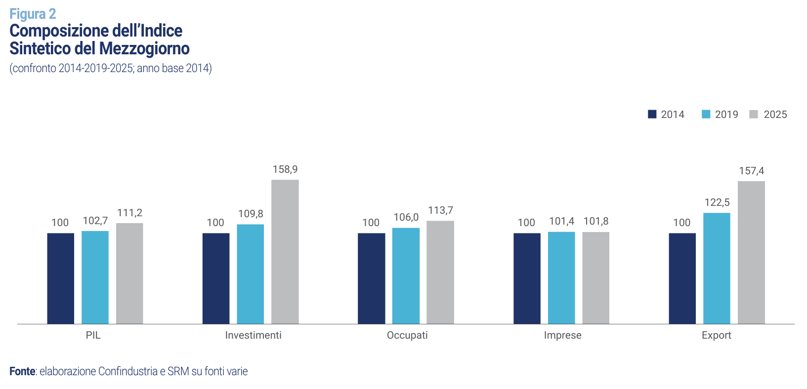
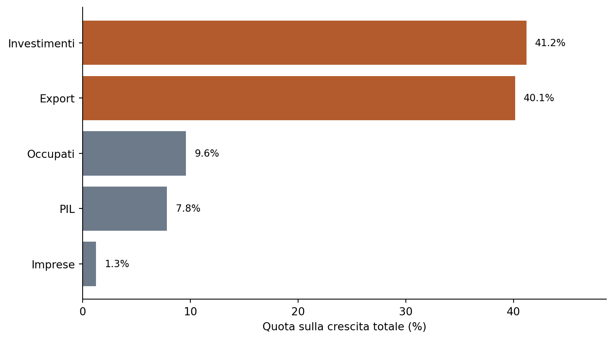
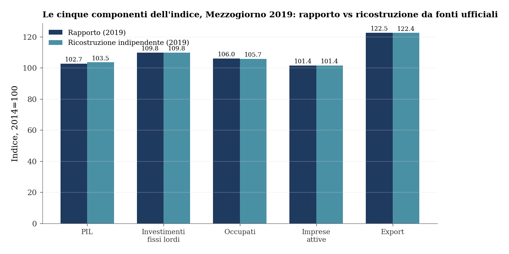
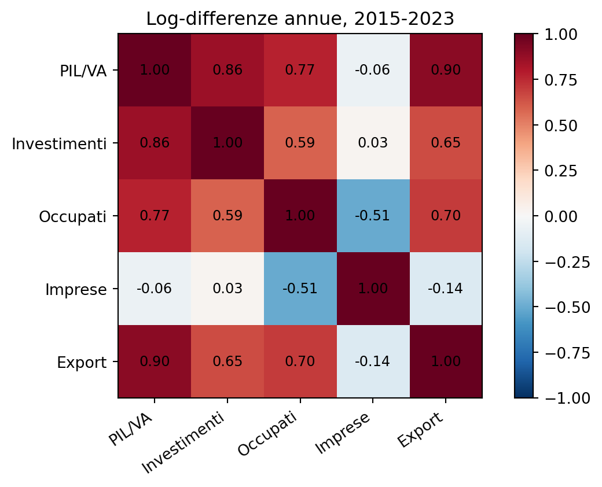
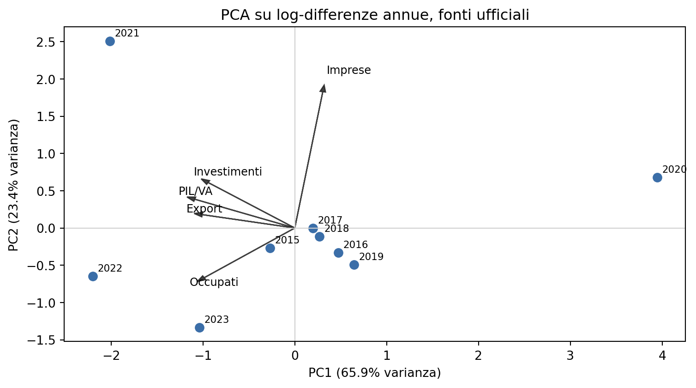

Quando un indice composito sovrappesa il ciclo
Interdipendenza delle variabili e double counting nel caso SRM-Confindustria sul Mezzogiorno
Paolo Volterra ![]()
Questa nota discute un limite metodologico ricorrente negli indici compositi: la selezione di variabili non indipendenti, legate da relazioni contabili, causali o cicliche, puo’ generare sovrappeso implicito e double counting. Il caso dell’indice sintetico SRM-Confindustria sul Mezzogiorno e’ utile per mostrare il problema in modo concreto. L’indice somma cinque grandezze indicizzate - PIL/valore aggiunto, investimenti, occupati, imprese attive ed export - senza pesi, senza normalizzazione per volatilita’ e senza una trattazione esplicita della loro interdipendenza. La verifica e’ condotta con una filiera replicabile in Python, basata su tabelle long, controlli di schema, ricostruzione dei vintage e confronto con fonti machine-readable quando disponibili: SDMX ISTAT per conti territoriali, occupazione ed export, Movimprese/InfoCamere per le imprese e API JSON Eurostat per controlli macro di coerenza. La ricostruzione indipendente conferma la formula e riproduce il 2019 con uno scarto minimo, ma mostra anche che il raccordo degli investimenti 2025 non e’ documentabile puntualmente dal solo materiale pubblico. La genealogia dei report mostra inoltre cambi di formula, base e vintage che rendono fragile la comparabilita’ storica. I numeri non sono necessariamente errati; l’indice va pero’ interpretato come dispositivo descrittivo e comunicativo, non come misura statistica robusta dello sviluppo economico.
indice composito, double counting, Mezzogiorno, Confindustria, SRM, indicatori economici, Python, SDMX, Eurostat
Versione citabile su Zenodo, con il PDF: doi.org/10.5281/zenodo.21423637.
1 Che cosa fa l’indice
L’indice SRM-Confindustria nasce come sintesi congiunturale dell’economia meridionale. La costruzione e’ lineare: alcune variabili macroeconomiche considerate rappresentative dello stato dell’economia vengono trasformate in indici con una base comune e poi sommate. Nelle versioni piu’ recenti le componenti sono cinque: valore aggiunto o PIL, investimenti fissi lordi, occupati, imprese attive ed export. Il risultato e’ un numero unico, leggibile nel tempo e confrontabile tra aree territoriali, pensato per restituire in modo rapido la direzione complessiva del ciclo economico.
Questa impostazione ha un vantaggio pratico. Il lettore non deve interpretare separatamente cinque serie diverse: puo’ partire da una misura sintetica e poi tornare alle componenti per capire quali variabili guidano il movimento. La formula e’ semplice e decomponibile. Quando i valori delle singole componenti sono pubblicati, si puo’ verificare se il totale torna e quale parte della variazione dipende da investimenti, export, occupazione, imprese o prodotto.
La domanda metodologica nasce nel passaggio dal cruscotto al numero unico. Che cosa si perde quando cinque serie economiche vengono sommate come se producessero informazione separata? La risposta non riguarda l’utilita’ delle variabili considerate, che sono tutte rilevanti. Riguarda il modo in cui la loro aggregazione puo’ amplificare alcune dimensioni del ciclo e rendere meno visibile la differenza tra crescita diffusa e movimento concentrato su poche componenti.
La verifica parte quindi da una posizione prudente. L’indice viene preso sul serio per la fonte che lo produce, per la sua continuita’ nel dibattito pubblico e per la semplicita’ della formula. Il dubbio non riguarda l’autorevolezza dell’operazione, ma la portata del numero che ne risulta. Se l’indice viene letto come termometro congiunturale, la costruzione puo’ essere adeguata al suo scopo. Se invece viene usato come misura sintetica di sviluppo, convergenza o superiorita’ relativa tra aree, occorre chiedere alla formula qualcosa di piu’.
2 Il problema generale
Un indice composito nasce per ridurre molte informazioni a un solo numero. La riduzione puo’ essere utile, soprattutto quando si vuole seguire nel tempo un fenomeno articolato o comunicarne rapidamente la direzione. La sintesi, tuttavia, non e’ mai neutra. La scelta delle variabili, della base, della normalizzazione, dei pesi e della regola di aggregazione determina il significato dell’indice almeno quanto i dati sottostanti.
La rilevanza delle variabili non basta. Un indicatore puo’ includere grandezze importanti e restare comunque fragile, se quelle grandezze non rappresentano dimensioni sufficientemente distinguibili del fenomeno. Quando le componenti sono fortemente correlate, oppure quando alcune sono cause o conseguenze di altre, la somma semplice puo’ trasformarsi in una contabilizzazione multipla dello stesso impulso economico.
La letteratura metodologica sugli indicatori compositi insiste proprio su questo punto: prima di aggregare, occorre esaminare struttura informativa, ridondanza, correlazioni, pesi impliciti e robustezza dell’indicatore [1], [2], [3]. Una matrice di indicatori non dovrebbe essere trattata come un paniere di informazioni indipendenti solo perche’ le colonne hanno nomi diversi.
3 Cosa significa includere variabili interdipendenti
Un esempio minimo rende visibile il meccanismo. Si immagini di costruire un indice composito di “dinamismo economico” usando due componenti:
- investimenti;
- prodotto interno lordo.
Le due variabili sono entrambe rilevanti, ma non sono indipendenti. Gli investimenti sono una componente della domanda aggregata e, nel tempo, influenzano anche la capacita’ produttiva. Se una politica pubblica aumenta gli investimenti, parte dello stesso impulso puo’ comparire anche nel PIL. Se l’indice somma investimenti e PIL come se fossero due segnali separati, quello stesso impulso viene contato due volte: una volta nella variabile originaria e una volta nella variabile che ne incorpora gli effetti.
Lo stesso vale per export e PIL. L’export non e’ una dimensione esterna al prodotto: e’ una componente della domanda. Una crescita dell’export puo’ aumentare il valore aggiunto delle imprese esportatrici, l’occupazione nei settori coinvolti e gli investimenti collegati. Se un indice include contemporaneamente export, PIL, occupati e investimenti, rischia di trasformare un unico ciclo espansivo in quattro conferme apparenti.
Queste variabili possono essere considerate insieme, ma non sommate come se fossero ortogonali. Vanno trattate come un sistema di variabili collegate.
| Scenario | Investimenti | PIL | Indice semplice | Interpretazione |
|---|---|---|---|---|
| Anno base | 100 | 100 | 200 | nessuno shock |
| Shock investimenti | 120 | 110 | 230 | lo stesso impulso entra negli investimenti e in parte nel PIL |
| Lettura ingenua | +20 | +10 | +30 | l'indice attribuisce 30 punti a un impulso originario di 20 |
Nell’esempio, l’indice semplice cresce di 30 punti. La variazione non corrisponde pero’ a due fenomeni indipendenti, perche’ l’aumento del PIL e’ in parte conseguenza dello shock sugli investimenti. L’indice non distingue tra impulso primario ed effetto derivato; li somma entrambi e produce un sovrappeso implicito.
La stessa logica vale quando si includono:
- una variabile di input e una di output, come occupati e valore aggiunto;
- una componente della domanda e il prodotto aggregato, come export e PIL;
- una misura di stock produttivo e una misura di attivita’, come imprese attive e occupazione;
- una politica o leva di investimento e gli esiti economici che quella leva produce.
In tutti questi casi, il composito puo’ avere una forma apparentemente equilibrata - cinque componenti, cinque pesi uguali - ma pesare in modo eccessivo il blocco causale piu’ rappresentato. Se tre componenti sono manifestazioni dello stesso ciclo e due sono piu’ autonome, il peso effettivo del ciclo non e’ tre quinti per scelta teorica: e’ tre quinti per ridondanza. La letteratura sugli indicatori compositi distingue infatti tra peso nominale e importanza effettiva: varianza, scala residua e correlazione tra componenti modificano il contributo reale di ciascun indicatore [4].
Qui “peso” va inteso in senso aritmetico, non come percentuale dichiarata dagli autori. Se cinque serie indicizzate valgono tutte 100 nell’anno base e vengono sommate senza coefficienti, ciascuna entra con lo stesso coefficiente nominale iniziale. Le quote percentuali calcolate piu’ avanti non sono quindi pesi scelti: sono contributi ex post alla crescita del totale, utili per capire quali componenti dominano il movimento dell’indice.
4 Il caso SRM-Confindustria
L’indice sintetico/composito SRM-Confindustria sul Mezzogiorno e’ un caso utile perche’ consente di osservare insieme due piani diversi [5]. Il primo riguarda la continuita’ storica dell’indicatore: nel tempo cambiano perimetro, numero di componenti, base e vintage statistici. Il secondo riguarda la forma recente dell’indice: cinque serie economiche indicizzate vengono sommate senza una ponderazione statistica progettata e senza un controllo documentato della loro interdipendenza.

Figura 1: Composizione dell’Indice Sintetico del Mezzogiorno, confronto 2014-2019-2025, anno base 2014. Riproduzione dalla fonte originale [5].
| Famiglia | Componenti | Base | Nota |
|---|---|---|---|
| Antecedenti omonimi | infrastrutture / sviluppo provinciale | Italia=100 | non comparabili con l'indice macro |
| Focus crisi 6 variabili | PIL, investimenti, imprese, fatturato, export, occupazione | 2007=600 | prima versione macroeconomica; include fatturato |
| Focus crisi 5 variabili | PIL, investimenti, imprese, export, occupazione | 2007=500 | il fatturato esce dall'indice |
| Composito 2007 | PIL, investimenti, imprese, export, occupati | 2007=500 | cambiano basi contabili e vintage dei dati |
| Composito 2014 | PIL, investimenti, occupati, imprese, export | 2014=500 | nuova base e confronto territoriale Nord/Centro/Mezzogiorno |
Sul piano strutturale, la versione recente somma cinque componenti indicizzate - PIL o valore aggiunto, investimenti fissi lordi, occupati, imprese attive ed export - senza una ponderazione statistica progettata. Non risulta un criterio esplicito che trasformi le cinque variabili in pesi: non una PCA, non pesi inversi alla volatilita’, non una calibrazione predittiva, non un’analisi di sensitivita’. La formula assegna solo lo stesso coefficiente aritmetico iniziale a cinque serie poste a 100 nell’anno base.
La fragilita’ e’ piu’ seria di una scelta di pesi discutibile ma dichiarata. In assenza di normalizzazione per volatilita’, controllo delle correlazioni e analisi di robustezza, sono i dati stessi a determinare i pesi effettivi dell’indice. Le componenti piu’ mobili, piu’ cicliche o piu’ soggette a revisione finiscono per guidare il totale. L’indice appare non ponderato, ma nella pratica trasferisce la ponderazione a volatilita’, trend e interdipendenza delle serie. Le cinque componenti non entrano quindi come cinque dimensioni indipendenti.
La struttura e’ quasi didattica: l’indice prende una misura aggregata dell’attivita’ economica, il PIL/valore aggiunto, e le affianca variabili che in parte ne sono determinanti, componenti o conseguenze. Investimenti ed export sono canali della domanda e dell’accumulazione; occupati e imprese attive sono legati alla produzione che il PIL/valore aggiunto misura. La criticita’ non riguarda soltanto la correlazione statistica, ma la ridondanza concettuale: l’indice contiene contemporaneamente un risultato macroeconomico e alcune sue determinanti o manifestazioni.
5 Perche’ le cinque componenti non sono ortogonali
La non indipendenza e’ sia economica sia contabile.
Gli investimenti sono una componente della domanda aggregata e modificano la capacita’ produttiva. Una loro accelerazione puo’ comparire direttamente nell’attivita’ economica e poi riapparire nel valore aggiunto, nell’occupazione, nelle imprese fornitrici e in parte anche nell’export. L’export e’ a sua volta domanda estera: se cresce, contribuisce al prodotto. L’occupazione e’ insieme input produttivo ed esito del ciclo. Il numero di imprese attive riflette struttura produttiva, ciclo, demografia imprenditoriale e politiche di incentivo.
Sommarle senza trattare questa interdipendenza equivale ad assumere che ogni variazione rappresenti informazione nuova e separata. L’assunzione e’ fragile. Se un impulso di politica economica aumenta investimenti, attivita’ produttiva, occupazione ed export, l’indice puo’ registrarlo piu’ volte: una volta nel canale diretto e poi nelle variabili che ne sono conseguenza.
In termini metodologici, il rischio e’ double counting. In termini comunicativi, il rischio e’ amplificazione del ciclo: la crescita dell’indice puo’ sembrare una convergenza ampia e strutturale quando e’ trainata da poche componenti cicliche e correlate.
6 Chi guida la crescita dell’indice
La versione 2026 del rapporto pubblica per il Mezzogiorno i valori delle cinque componenti nel 2014, 2019 e 2025. Il valore complessivo del 2025 e’ la somma diretta:
| 2014 | 2019 | 2025 | |
|---|---|---|---|
| Export | 100.0 | 122.5 | 157.4 |
| Imprese | 100.0 | 101.4 | 101.8 |
| Investimenti | 100.0 | 109.8 | 158.9 |
| Occupati | 100.0 | 106.0 | 113.7 |
| PIL | 100.0 | 102.7 | 111.2 |
| Totale | 500.0 | 542.4 | 643.0 |
L’aritmetica torna. Resta da stabilire che cosa misuri quella somma. La crescita dell’indice dal 2014 al 2025 non e’ distribuita in modo equilibrato tra le componenti:
| punti_indice | quota_percentuale | |
|---|---|---|
| Investimenti | 58.9 | 41.2 |
| Export | 57.4 | 40.1 |
| Occupati | 13.7 | 9.6 |
| PIL | 11.2 | 7.8 |
| Imprese | 1.8 | 1.3 |
Investimenti ed export spiegano insieme oltre l’80% della crescita complessiva dell’indice 2014-2025. Non e’ una percentuale scelta nella formula: e’ la scomposizione ex post di una somma diretta. Le tre componenti piu’ strutturali - valore aggiunto/PIL, occupati e imprese attive - spiegano meno di un quinto del movimento. Questa non e’ una prova definitiva di double counting, ma e’ un segnale forte: la somma non pesata concentra il messaggio dell’indice sulle componenti piu’ mobili e potenzialmente piu’ correlate al ciclo.

Quota ex post delle componenti sulla crescita dell’indice pubblicato, 2014-2025
7 Verifica indipendente delle componenti
La critica di double counting non nasce da una contestazione generica dei numeri pubblicati. Prima viene la verifica della costruzione. La formula dichiarata e’ una somma diretta di cinque indici a base 2014=100: nell’anno base il totale vale 500 e nel 2025 la somma 111,2 + 158,9 + 113,7 + 101,8 + 157,4 restituisce esattamente 643,0. Non emergono quindi componenti nascoste, pesi impliciti diversi da quelli aritmetici o normalizzazioni non dichiarate.
Le cinque componenti sono state poi ricostruite da fonti statistiche esterne al rapporto. Per il valore aggiunto/PIL e per gli investimenti fissi lordi si usano i conti economici territoriali ISTAT in valori concatenati; per gli occupati la rilevazione trimestrale sulle forze di lavoro; per l’export il commercio estero regionale; per le imprese attive la serie Movimprese/InfoCamere [6], [7], [8], [9]. Un punto va chiarito: a livello regionale la fonte ordinaria pubblica il valore aggiunto, non un PIL territoriale comprensivo di imposte nette sui prodotti. L’etichetta “PIL” dell’indice va quindi letta, in pratica, come valore aggiunto territoriale.
| Componente | Fonte | Interfaccia | Riferimento pubblico |
|---|---|---|---|
| PIL/valore aggiunto | ISTAT, conti economici territoriali | SDMX | dataflow ISTAT 93_1227, aggregato B1G_B_W2_S1, L_2020 |
| Investimenti fissi lordi | ISTAT, conti economici territoriali | SDMX | dataflow ISTAT 93_1227, aggregato P51G_D_W2_S1, asset N11, L_2020 |
| Occupati | ISTAT, forze di lavoro | SDMX | dataflow ISTAT 150_882_DF_DCCV_OCCUPATITDE1_4 |
| Imprese attive | Movimprese/InfoCamere | serie camerale trimestrale | Movimprese, stock imprese attive di fine periodo |
| Export | ISTAT, commercio estero regionale | SDMX | dataflow ISTAT DF_DCSE_CPA_AT2007_COE_OPT_A_REG_ALL_REG |
| Controllo macro PIL | Eurostat, national accounts | JSON API | Eurostat nama_10_gdp, na_item=B1GQ, unit=CLV20_MEUR, geo=IT |
| Controllo macro investimenti | Eurostat, national accounts | JSON API | Eurostat nama_10_gdp, na_item=P51G, unit=CLV20_MEUR, geo=IT |
Il controllo Eurostat non sostituisce la ricostruzione territoriale: serve a verificare che la dinamica nazionale dei conti in volumi concatenati sia coerente con il quadro macroeconomico usato per interpretare il dato regionale [10].
| 2019 | 2025 | |||
|---|---|---|---|---|
| pubblicato | ricostruito | pubblicato | ricostruito/verificabile | |
| PIL/VA | 102.7 | 103.5 | 111.2 | 113.0 |
| Investimenti | 109.8 | 109.8 | 158.9 | NaN |
| Occupati | 106.0 | 105.7 | 113.7 | 113.6 |
| Imprese | 101.4 | 101.4 | 101.8 | 101.8 |
| Export | 122.5 | 122.4 | 157.4 | 157.4 |
| Totale | 542.4 | 542.9 | 643.0 | NaN |
Il 2019 e’ il controllo piu’ pulito, perche’ tutte e cinque le componenti sono osservabili su fonti ufficiali consolidate: lo scarto sul totale e’ 0,5 punti su 542,4, cioe’ circa lo 0,08%. Nel 2025, invece, occupati, imprese ed export sono verificabili e coincidono sostanzialmente; il PIL/valore aggiunto e’ confrontabile con la stima preliminare ISTAT per ripartizione territoriale; gli investimenti fissi lordi restano il punto non replicabile in modo puntuale con il solo materiale pubblico disponibile.

Figura 2: Le cinque componenti dell’indice per il Mezzogiorno nel 2019: valori pubblicati nel rapporto contro ricostruzione da fonti ufficiali indipendenti.
| SRM pubblicato 2025 | Ricostruzione ibrida 2025 | Solo dati territoriali consolidati | |
|---|---|---|---|
| PIL/VA | 111.2 | 113.0 | 112.4 |
| Investimenti | 158.9 | 158.9 | 118.3 |
| Occupati | 113.7 | 113.6 | 113.6 |
| Imprese | 101.8 | 101.8 | 101.8 |
| Export | 157.4 | 157.4 | 157.4 |
| Totale | 643.0 | 644.7 | 603.5 |
Il controllo di sensibilita’ mostra perche’ la questione degli investimenti e’ decisiva. Se per il 2025 si usa l’ultimo dato territoriale consolidato disponibile per gli investimenti, il composito scende a 603,5. Il valore pubblicato puo’ riflettere una stima territoriale piu’ alta, coerente con la dinamica recente di costruzioni, opere pubbliche e PNRR. Il raccordo quantitativo dal materiale pubblico al numero indice 158,9 resta pero’ non documentato riga per riga.
8 Evidenza storica: l’indice cambia oggetto
Un indice composito puo’ essere fragile anche quando ogni singolo calcolo e’ corretto. Se formula, base e fonti cambiano, la serie storica pubblicata non va letta come se fosse un unico indicatore stabile.
Nel caso SRM-Confindustria, la genealogia ricostruita dai report mostra almeno tre fratture: l’uscita del fatturato dopo la prima versione macro, il cambio delle basi contabili e la nuova base 2014 con confronto territoriale. Inoltre i valori passati vengono rettificati tra vintage.
| Report | Formula | Valore 2020 | Base |
|---|---|---|---|
| 2020 dicembre | macro_5var_2007_base2015 | 426.400000 | 2007=500 |
| 2021 dicembre | macro_5var_2007_base2015 | 443.500000 | 2007=500 |
| 2022 dicembre | macro_5var_2007_base2015 | 440.800000 | 2007=500 |
| 2023 dicembre | macro_5var_2007_base2015 | 440.100000 | 2007=500 |
La rettifica del 2020 e’ informativa. Nel report 2020 il valore viene pubblicato a 426,4; nel report 2021 lo stesso anno e’ riscritto a 443,5; nei report successivi si assesta intorno a 440. Questo mostra che SRM non trascina sempre meccanicamente il primo valore stimato. Ma mostra anche che l’indice dipende da vintage e raccordi non sempre documentati in modo pienamente replicabile.
9 Filiera di verifica
La ricostruzione non si basa su una trascrizione manuale isolata dei numeri del rapporto. I valori pubblicati sono portati in una struttura long, con campi separati per report, vintage, formula, base, anno del dato, componente e valore. Questa forma consente controlli semplici ma decisivi: unicita’ della coppia anno-componente dentro ciascun vintage, coerenza della base, somma delle componenti rispetto al totale dichiarato, cambi di formula e rettifiche degli anni gia’ pubblicati.
Quando le componenti sono disponibili da fonti statistiche aperte, il controllo segue la stessa logica: interrogazione diretta degli endpoint, lettura delle dimensioni, selezione esplicita di unita’, territorio, prezzo, frequenza e periodo, aggregazione per macroarea e indicizzazione alla base del rapporto. Per ISTAT questo significa lavorare sulle chiavi SDMX dei dataflow territoriali; per i controlli nazionali e di coerenza esterna, quando rilevanti, significa usare anche le API JSON di Eurostat, ad esempio per verificare livelli e variazioni dei conti nazionali.
La critica all’indice arriva dopo due passaggi distinti. Prima si controlla che l’indice pubblicato sia aritmeticamente ricostruibile e che le componenti non siano state lette fuori contesto. Poi si valuta se la regola di aggregazione produca un indicatore informativo o se, al contrario, amplifichi un fattore comune. La verifica degli indici non e’ quindi un dettaglio tecnico separato dall’analisi. E’ il passaggio che consente di distinguere un errore nei dati da una fragilita’ nella costruzione del composito.
10 Come testare empiricamente il double counting
La critica metodologica deve essere verificata sui dati, non solo argomentata. Il test corretto non va fatto sui livelli indicizzati, perche’ serie con trend comune producono correlazioni alte quasi per costruzione. L’analisi deve spostarsi sulle variazioni annue, preferibilmente log-differenze o differenze percentuali delle componenti originali. In questo modo si osserva se le serie reagiscono insieme agli stessi impulsi, invece di misurare soltanto il fatto che molte grandezze economiche crescono o scendono lungo una traiettoria comune.
Il protocollo di verifica puo’ essere organizzato in piu’ controlli, ordinati dal piu’ trasparente al piu’ sintetico. La sequenza separa la ricostruzione delle fonti dalla diagnosi statistica e rende chiaro dove finisce il controllo dei numeri e dove comincia il giudizio sulla forma dell’indice:
- Ricostruire una matrice annuale omogenea delle cinque componenti, separando formule storiche, basi e vintage.
- Portare le serie originali in formato coerente, preferendo download ripetibili da SDMX o API JSON quando la fonte lo consente.
- Calcolare la matrice di correlazione sulle variazioni annue.
- Verificare quanto il totale dipende da ciascuna componente, ricalcolandolo dopo aver escluso una variabile alla volta.
- Misurare la volatilita’ delle variazioni annue, per capire se la somma lascia dominare le serie piu’ mobili.
- Stimare una PCA sulle variazioni standardizzate.
- Rappresentare i loadings delle variabili in un biplot, per verificare se PIL/valore aggiunto, investimenti, occupati, imprese ed export puntano verso uno stesso asse ciclico o se descrivono dimensioni effettivamente distinte.
La matrice da produrre avra’ questa forma:
| anno | d_log_pil_va | d_log_investimenti | d_log_occupati | d_log_imprese | d_log_export |
|---|---|---|---|---|---|
| 2015 | ... | ... | ... | ... | ... |
| 2016 | ... | ... | ... | ... | ... |
| 2017 | ... | ... | ... | ... | ... |
La prima verifica guarda le correlazioni tra variazioni annue. Si usa la matrice ricostruita dalle cinque fonti ufficiali e si tengono solo gli anni disponibili per tutte le componenti. Il periodo completo e’ 2014-2023; le variazioni osservate sono quindi quelle dal 2015 al 2023. Il numero di osservazioni resta limitato, ma la tavola ha un vantaggio: mostra direttamente se le serie si muovono insieme, senza imporre ancora una struttura fattoriale.
| PIL/VA | Investimenti | Occupati | Imprese | Export | |
|---|---|---|---|---|---|
| PIL/VA | 1.00 | 0.86 | 0.77 | -0.06 | 0.90 |
| Investimenti | 0.86 | 1.00 | 0.59 | 0.03 | 0.65 |
| Occupati | 0.77 | 0.59 | 1.00 | -0.51 | 0.70 |
| Imprese | -0.06 | 0.03 | -0.51 | 1.00 | -0.14 |
| Export | 0.90 | 0.65 | 0.70 | -0.14 | 1.00 |

Correlazioni tra variazioni annue delle componenti ufficiali
La seconda verifica ricalcola il totale pubblicato togliendo una componente alla volta. Non e’ una proposta di nuovo indice, ma un test di dipendenza: se l’esclusione di una componente cambia molto la crescita della somma, quella componente ha guidato una parte rilevante del messaggio sintetico. Nel 2025 il controllo e’ particolarmente utile per distinguere una crescita diffusa da una crescita concentrata.
| 2014 | 2019 | 2025 | crescita_2014_2025 | |
|---|---|---|---|---|
| Indice completo | 500.0 | 542.4 | 643.0 | 143.0 |
| Senza Export | 400.0 | 419.9 | 485.6 | 85.6 |
| Senza Imprese | 400.0 | 441.0 | 541.2 | 141.2 |
| Senza Investimenti | 400.0 | 432.6 | 484.1 | 84.1 |
| Senza Occupati | 400.0 | 436.4 | 529.3 | 129.3 |
| Senza PIL | 400.0 | 439.7 | 531.8 | 131.8 |
La terza verifica riguarda la volatilita’. Una somma di indici base 100 non rende automaticamente comparabili componenti molto stabili e componenti molto mobili. Se una serie ha variazioni annue piu’ ampie, puo’ pesare molto nel movimento del totale anche senza ricevere un coefficiente formale piu’ alto. La tavola seguente misura la volatilita’ delle variazioni annue ufficiali e mostra quale peso avrebbe ciascuna componente se si adottasse, solo come controllo, un criterio inverso alla volatilita’.
| volatilita_annua_percentuale | peso_inverso_volatilita_percentuale | |
|---|---|---|
| Export | 10.8 | 3.5 |
| Investimenti | 8.8 | 4.3 |
| PIL/VA | 4.5 | 8.4 |
| Occupati | 1.7 | 21.8 |
| Imprese | 0.6 | 62.0 |
La soglia interpretativa non deve essere meccanica. Se le correlazioni sono diffusamente alte e la prima componente principale spiega una quota elevata della varianza, l’indice sta aggregando molte manifestazioni dello stesso ciclo. In quel caso la somma delle cinque serie non produce cinque volte informazione. Produce un numero sintetico che amplifica un fattore comune e rende meno visibile la distinzione tra crescita diffusa e movimento concentrato su poche componenti.
La PCA arriva dopo questi controlli. Con pochi anni completi non va caricata di un significato eccessivo, ma resta utile come rappresentazione compatta della stessa diagnosi. Se correlazioni, leave-one-out e volatilita’ indicano gia’ che il movimento dell’indice e’ guidato da poche serie cicliche, il biplot diventa una conferma visuale, non il fondamento dell’argomento. L’uso di correlazioni e PCA per individuare ridondanze, ed eventualmente ridurre un indicatore composito, e’ coerente con applicazioni recenti su indici regionali multidimensionali [11].
Il biplot e’ utile soprattutto come controllo visuale dei loadings, non come prova autosufficiente. Se le frecce delle cinque componenti risultano ravvicinate e orientate nello stesso quadrante, la figura rende immediatamente visibile la ridondanza informativa: l’indice non sta combinando cinque direzioni indipendenti, ma piu’ misure esposte allo stesso fattore comune. Se invece le frecce sono disperse su assi diversi, l’argomento del double counting va ridimensionato o qualificato.
Un biplot costruito sui valori pubblicati da SRM mescolerebbe finalita’ diverse: da un lato la verifica dell’aritmetica dell’indice, dall’altro il test statistico della ridondanza. Il biplot va costruito sulla matrice indipendente ricavata dalle cinque fonti individuate: valore aggiunto/PIL, investimenti, occupati ed export da fonti ISTAT interrogate via SDMX; imprese attive da Movimprese/InfoCamere. Tenendo solo gli anni disponibili su tutte e cinque le dimensioni, la matrice completa copre il periodo 2014-2023; la PCA e’ quindi stimata sulle nove variazioni annue 2015-2023.

Biplot PCA sulle variazioni annue delle cinque componenti ricostruite da fonti ufficiali
| misura | valore |
|---|---|
| osservazioni annue | 9 |
| anni livello completi | 2014-2023 |
| varianza spiegata PC1 | 65.9% |
| varianza spiegata PC1+PC2 | 89.3% |
Il risultato va letto come evidenza esplorativa, perche’ nove osservazioni annue restano poche per una PCA stabile. Tuttavia il primo asse cattura una quota elevata della varianza e raccoglie nella stessa direzione valore aggiunto/PIL, investimenti, occupati ed export. Le imprese attive appaiono piu’ autonome e pesano soprattutto sul secondo asse. La figura e’ quindi coerente con una lettura piu’ precisa del double counting: il composito non aggrega cinque dimensioni pienamente indipendenti, ma combina quattro componenti molto esposte al ciclo e una componente demografico-produttiva piu’ lenta.
Nessuno di questi controlli, preso da solo, chiude la questione. Le correlazioni sono stimate su pochi anni, il leave-one-out descrive la dipendenza meccanica della somma, la volatilita’ dipende dal periodo scelto e la PCA resta esplorativa. La forza dell’evidenza nasce dalla convergenza: controlli diversi, con limiti diversi, segnalano tutti che il numero unico e’ guidato da poche componenti cicliche e che una parte rilevante dell’informazione aggregata non e’ indipendente.
Un indice a pesi uguali puo’ essere una scelta difendibile. In alcuni contesti, soprattutto con serie brevi o irregolari, la media a pesi uguali puo’ essere competitiva rispetto a PCA e modelli fattoriali, anche perche’ resta decomponibile e riduce l’incertezza di stima [12], [13]. Quel risultato presuppone pero’ un impianto statistico esplicito: selezione coerente delle variabili, standardizzazione, controllo del segno economico, valutazione predittiva o di robustezza. Nel caso in esame, la criticita’ riguarda la somma di indicatori interdipendenti senza una verifica documentata della loro struttura informativa.
11 Perche’ la critica e’ piu’ forte della semplice discrepanza sui dati
La verifica dei dati resta necessaria, soprattutto per gli investimenti recenti. Una critica basata solo su “questo numero non torna” resta pero’ vulnerabile: SRM puo’ rispondere che usa un diverso vintage, una stima preliminare o una fonte specialistica non ancora pubblicata in dettaglio. La ricostruzione indipendente riduce molto questo margine, ma non lo elimina del tutto per gli anni piu’ recenti.
La critica strutturale e’ piu’ robusta perche’ non dipende da un singolo scarto puntuale. Anche concedendo che ogni valore sia calcolato correttamente, restano tre problemi:
- le componenti non sono indipendenti;
- la somma non pesata non controlla ne’ volatilita’ ne’ ridondanza;
- l’indice cambia formula e base nel tempo.
Questi tre elementi bastano per ridimensionare l’uso dell’indice. Il composito puo’ restare utile come dispositivo descrittivo, perche’ mette insieme indicatori economici rilevanti e consente una lettura rapida della congiuntura. La sua forma attuale non consente pero’ di trattarlo come una misura sintetica robusta dello sviluppo del Mezzogiorno. Il giudizio resta quindi volutamente circoscritto: non riguarda l’utilita’ dell’indice come strumento di comunicazione, ma l’ampiezza delle conclusioni che si possono trarre dal numero finale.
La distinzione tra fatto verificato e valutazione metodologica e’ essenziale. La formula pubblicata e’ una somma diretta di cinque serie indicizzate. Non risultano coefficienti di ponderazione diversi da quelli aritmetici, ne’ una procedura documentata di standardizzazione, controllo della ridondanza o robustezza. Questa e’ la parte accertabile. La valutazione riguarda invece l’adeguatezza di quella scelta: una somma cosi’ costruita e’ leggibile e comunicabile, ma resta debole quando viene interpretata come misura autonoma dello sviluppo o della convergenza.
Il contesto va trattato con maggiore cautela. La persistenza dell’indice nella comunicazione pubblica sembra dipendere anche dalla sua semplicita’, dalla sua riconoscibilita’ e dall’abitudine a leggerlo come termometro congiunturale. Questa e’ un’inferenza, non una prova sulle intenzioni degli autori o sulla qualita’ del loro lavoro complessivo. La critica resta quindi sul metodo pubblicamente osservabile: il passaggio dalla lista di indicatori al numero unico non espone i controlli che oggi ci si aspetterebbe da un indicatore composito robusto.
12 Una controproposta
La parte utile dell’indice non va dispersa. Le cinque grandezze scelte da SRM-Confindustria sono informative: valore aggiunto, investimenti, occupazione, imprese ed export raccontano aspetti rilevanti dell’economia meridionale. La criticita’ nasce quando queste serie vengono compresse in un solo numero senza esplicitare come si trattano volatilita’, correlazioni, revisioni e sovrapposizioni economiche.
Una soluzione piu’ trasparente sarebbe trattare l’indice come un cruscotto, non come una graduatoria. Le cinque serie resterebbero visibili, con la stessa base e lo stesso vintage, e il lettore vedrebbe subito se la crescita e’ diffusa o concentrata. Nel caso 2025, ad esempio, il messaggio cambierebbe: non “il Mezzogiorno supera il Nord” come sintesi indistinta, ma “investimenti ed export guidano gran parte del recupero, mentre valore aggiunto, occupati e imprese si muovono molto meno”.
Se si vuole mantenere un numero unico, la costruzione dovrebbe seguire una procedura dichiarata. Le serie andrebbero trasformate in variazioni comparabili, standardizzate rispetto alla volatilita’, orientate tutte nello stesso verso economico e controllate per correlazione. A quel punto si possono confrontare almeno tre versioni: media standardizzata a pesi uguali, indice con pesi corretti per la volatilita’ e primo fattore comune stimato con PCA. La differenza tra queste versioni diventerebbe parte dell’informazione, non un dettaglio tecnico nascosto.
| Prodotto informativo | Uso corretto | Vantaggio | Limite |
|---|---|---|---|
| Cruscotto a cinque serie | Lettura descrittiva delle componenti | Evita di nascondere chi guida il movimento | Non produce una classifica unica |
| Somma di indici base 100 | Sintesi comunicativa rapida | Facile da leggere e decomporre | Lascia i pesi effettivi a volatilita’ e correlazioni |
| Media standardizzata | Confronto tra variabili con scale e volatilita’ diverse | Riduce il dominio delle serie piu’ mobili | Richiede una scelta esplicita del periodo di standardizzazione |
| Indice a fattore comune | Misura del ciclo condiviso tra le componenti | Separa fattore comune e componenti piu’ autonome | Meno immediato per un pubblico non tecnico |
La controproposta non elimina la comunicazione sintetica; la rende verificabile. Il lettore puo’ continuare ad avere un numero di sintesi, ma insieme a una tavola che mostra componenti, fonti, vintage, contributi alla variazione e sensibilita’ della formula. In questo modo l’indice non chiede fiducia nell’autorita’ di chi lo produce. Espone la propria costruzione e permette di capire se il risultato dipende da un miglioramento diffuso oppure da poche serie molto mobili.
13 Conclusione
Il caso SRM-Confindustria consente di partire da un principio generale e arrivare a una valutazione concreta. Un indice composito deve trattare la selezione delle variabili come una scelta metodologica forte, non come un elenco di grandezze importanti. Quando le variabili sono interdipendenti, la loro somma puo’ sovrappesare alcune componenti e contabilizzare piu’ volte lo stesso impulso macroeconomico.
Nel caso dell’indice del Mezzogiorno, questa criticita’ e’ evidente. Investimenti, export, occupazione, imprese e valore aggiunto appartengono allo stesso sistema di relazioni economiche. La somma diretta di cinque indici a base 100 non dimostra che il Mezzogiorno migliori simultaneamente su cinque dimensioni indipendenti. Mostra che alcune variabili del ciclo, soprattutto investimenti ed export, si sono mosse molto e dominano il totale.
L’indice puo’ essere usato come sintesi comunicativa e come porta d’ingresso per leggere le singole componenti. Il suo uso diventa fragile quando viene trattato come metrica autonoma di sviluppo o convergenza, senza un’analisi di ridondanza, pesi impliciti, vintage e robustezza. Lo smontaggio dell’indice produce quindi un risultato piu’ utile di una semplice contestazione: mostra che il calcolo e’ in larga parte ricostruibile, ma anche che l’interpretazione pubblica del numero eccede cio’ che la formula consente di sostenere. La critica non richiede di attribuire intenzioni o competenze agli autori; richiede solo di prendere sul serio la formula pubblicata e di valutarla con gli standard ordinari degli indicatori compositi.
Trasparenza sull’uso dell’intelligenza artificiale
L’uso di strumenti di intelligenza artificiale generativa e’ dichiarato esplicitamente in quanto parte del processo di lavoro seguito nella redazione del presente documento. Tali strumenti sono stati impiegati a supporto della lettura, della sintesi, della riorganizzazione argomentativa e della revisione testuale, sempre nell’ambito di un processo pienamente controllato dall’autore.
La responsabilita’ per le fonti utilizzate, le analisi condotte, le verifiche effettuate, le interpretazioni proposte e le conclusioni formulate resta interamente in capo all’autore.
L’intelligenza artificiale e’ stata utilizzata come ambiente di supporto cognitivo ed editoriale, non come fonte primaria, autore autonomo o sostituto del giudizio critico.
14 Referenze
15 Riutilizzare
CC-BY-4.0